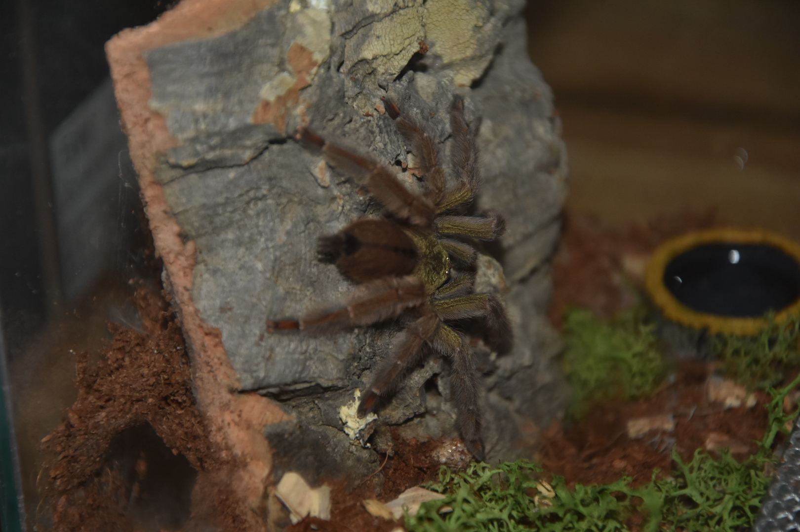
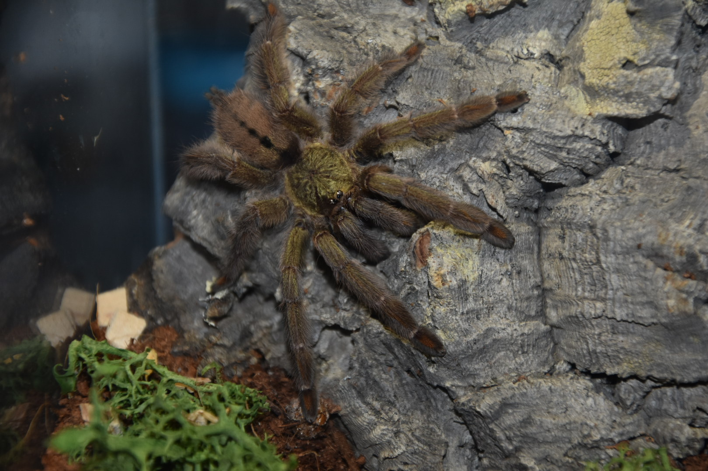

Psalmopoeus cambridgei - Trinidad Chevron
Wygląd i rozmiary
Samice tego gatunku dorastają do około 7 cm długości ciała (DC), samce zazwyczaj do około 4,5-5 cm DC. Rozpiętość odnóży może dochodzić nawet do 20 cm. Młode osobniki maja głównie czarnobrązowe ubarwienie, 6-ty segment odnóży jaśniejszy oraz charakterystyczny ornament na odwłoku. Wraz ze wzrostem pająka ubarwienie zmienia się na kolor oliwkowo-brązowy. Odwłok staje się jasny z czarnym ornamentem który u dorosłego samca zanika. Występują też charakterystyczne pomarańczowe elementy na piętach i stopach.
Długość życia
Samice dożywają do 20 lat, samce padają około pół roku po ostaniej wylince.
Występowanie i biotop
Na wolności występuje w Trynidadzie i Tobago ( Ameryka Południowa ). Jest to gatunek endemiczny.
Temperatura i wilgotność
Za dnia utrzymywać temperaturę 24-28 stopni , nocami spadki do 20 stopni. Wilgotność powinna wynosić 70-80%.
Cechy szczególne
Gatunek nadrzewny, szybki, skoczny, defensywny. Polecany dla średnio-zaawansowanych hodowców Nie wyczesuje włosków parzących z odwłoka. Jad słaby.

